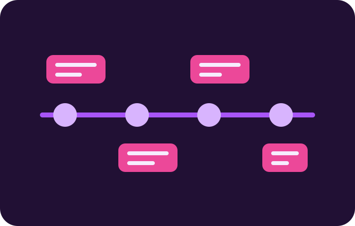

Apresentação Kanban
Organização de tarefas em colunas para acompanhar o andamento de um projeto.
Trabalho Final Web
Registro dos trabalhos feitos no semestre. A ideia é mostrar a evolução sem transformar o projeto em propaganda: cada card resume uma entrega real.
arraste para navegar
Organização de tarefas em colunas para acompanhar o andamento de um projeto.
Criação de uma frase curta para comunicar a proposta principal de uma marca.
Estudo de formas mais rápidas e organizadas de planejar trabalhos em equipe.
Desenvolvimento de sÃmbolo, cor e linguagem visual para representar um projeto.
Apresentação do layout criado no Figma e das principais decisões visuais.
Criação de telas próximas do resultado final, com visual e navegação definidos.
Primeira estrutura de página usando tags, textos, links e organização semântica.
Aplicação de estilos para transformar uma estrutura simples em interface visual.
Uso de Git e GitHub para salvar versões, organizar alterações e publicar código.
Construção de layouts com alinhamento, colunas, linhas e distribuição de elementos.
Primeiras animações em CSS, controlando movimento e mudança de estado.
Aprofundamento das animações para deixar a interface mais dinâmica.
Projeto responsivo com fontes externas, variáveis de cor e adaptação para telas diferentes.
Prática extra para reforçar estrutura, organização visual e responsividade.
Site em equipe com páginas integradas, branches, GitHub e publicação online.
Protótipo de baixa fidelidade com telas, fluxo de navegação e identidade visual.
Criação de uma página pensando na identidade visual e na necessidade de um cliente.
registro pessoal
No inÃcio do semestre eu conhecia a internet apenas como usuário. Eu sabia acessar sites, clicar em links, preencher formulários e pesquisar informações, mas não entendia como uma página era criada por dentro. HTML e CSS pareciam assuntos distantes, cheios de regras e detalhes difÃceis. Minha expectativa era aprender o básico para conseguir montar uma página simples, entender a função de cada arquivo e perder o medo de mexer em código.

Agora consigo estruturar uma página com HTML semântico, usando header, nav, main, section, article e footer de forma organizada. Aprendi a aplicar estilos com CSS, trabalhar com cores, fontes, espaçamentos, sombras, bordas arredondadas e efeitos de hover. Também entendi melhor o Box Model, Flexbox e Grid, que me ajudaram a construir layouts mais limpos. Com media queries, aprendi a adaptar uma interface para desktop, tablet e celular. Com keyframes, consegui criar animações como entrada suave, movimento lateral e pulso nos elementos da timeline.
Meu próximo objetivo é continuar praticando HTML e CSS em projetos reais, melhorando minha organização visual e minha responsividade. Também quero aprender JavaScript para criar páginas mais interativas, validar formulários e desenvolver pequenos sistemas no navegador. Depois disso, pretendo estudar frameworks de front-end e entender melhor como o back-end funciona. Quero continuar usando Git e GitHub para versionar meus projetos, publicar no GitHub Pages e montar um portfólio com trabalhos cada vez mais completos. Este projeto mostra que minha base evoluiu: hoje eu não apenas vejo uma página pronta, mas entendo como planejar, construir, ajustar e publicar uma interface web com mais segurança, critério e autonomia.